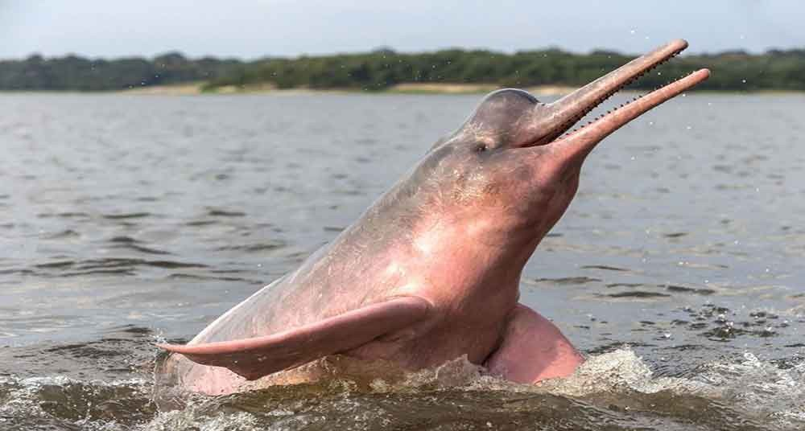

Existen hasta tres subespecies del delfín rosado: el delfín rosado del Orinoco, del Amazonas y el boliviano.
Lo podemos encontrar en los ríos Amazonas, en Madeira de Bolivia y en Orinoco según su especie. Se calcula que tiene asociado una extensión de terreno que fácilmente puede llegar a alcanzar los 7 millones de km^2.
Entre todo ese territorio puede vivir en aguas marinas, cascadas y demás aguas rápidas así como en algunas partes bajas de los ríos.
Su color rosa se nota mucho más en los machos que las hembras, y son los delfines más grandes que se puede encontrar en los ríos.
Su dieta es principalmente a base de peces, entre los que se encuentras las pirañas.
Los delfines rosados son capaces de adaptarse a casi cualquier tipo de agua siempre y cuando tengan el alimento necesario que les asegura su subsistencia. Se trata de unos animales muy especiales que te gustará ver.
